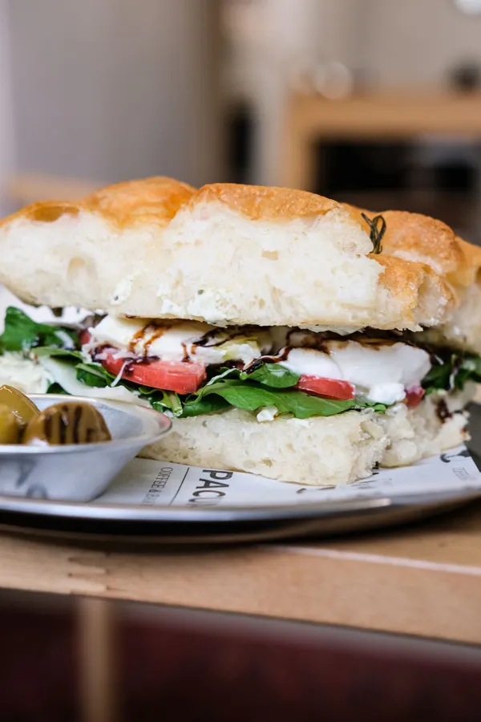

01
Focaccia
Focaccia çeşitleri burada listelenir.
Pazartesi hariç her gün 09.00 – 18.00. Sorularınızı ve siparişlerinizi doğrudan WhatsApp'tan yazın, hazır mesajla kolayca iletin.

temsilî fotoğrafBaşlıklar Instagram profilinizin öne çıkanlarından ve işletme adınızdan alındı. Ürünler, içerikler ve fiyatlar sizinle birlikte eklenir; bu sayfada uydurma bir menü yoktur.
Focaccia çeşitleri burada listelenir.

Sandviç çeşitleri ve içerikleri burada.

Hamburger seçenekleri burada.

Kahvaltı seçenekleri burada.

Sıcak ve soğuk kahveler burada.
Fotoğraflar temsilîdir, işletmenin ürünlerini göstermez.
Yemeksepeti'ndeki sayfanız sizi bulduran kanal olarak yerinde kalır. Bu sayfa ona ek: kendi adresiniz, kendi saatleriniz ve müşterinin size tek dokunuşla yazabildiği bir kapı.
Müşteri profilinizdeki bağlantıdan açar; saatleri, adresi ve başlıkları görür.
WhatsApp düğmesi hazır bir mesajla sohbeti açar; yazı yazmasına gerek kalmaz.
Soru ya da sipariş notu doğrudan telefonunuza düşer; aracı yoktur.
Resmî tatil ve özel günlerde değişiklik olabilir; emin olmak için arayın.